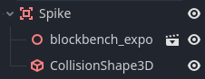
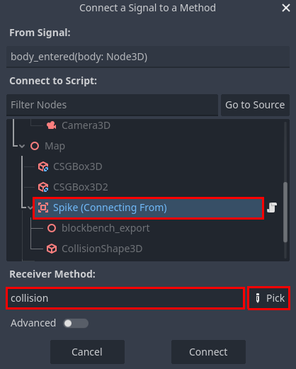

The first prop to make is a spike. This is a very simple object with a hitbox that resets the scene when the player touches it.
Create an Area3D, drag the spike.gltf model onto it, then add a CollisionShape3D and fit it to the spike's model. The object should look like this:

Add this script to it:
extends Area3D
func collision(body: Node3D):
if body.name == "Player":
get_tree().call_deferred("reload_current_scene")
The collision function gets called whenever something collides with this Area3D, then we check the node to make sure it is the player, and if so, we reset the scene. Note the call_deferred function. Godot will switch between several major tasks many times every second to create a cohesive experience. That can include rendering, input polling, physics, and more. Certain tasks may have specific requirements while they are running, one example is that the node tree cannot be modified during the physics cycle. Since the collision function is called during the physics cycle, and reloading the scene completely destroys and rebuilds the node tree, the physics engine throws an error. Using call_deferred tells the engine to wait to call the specified function until it is valid.
Running the game and walking into the spikes shows that nothing happens. That's because collision is not a built-in callback, it's a custom defined function that is called nowhere. In fact, there is no callback for collisions on an Area3D. Instead, it has a signal.
Signals are messages that emit in reaction to specific events. The signal needed here is called body_entered. In the top right next to the Inspector tab, switch to the Node tab and double click the body_entered signal. In the pop-up dialog, select the spike node and link it to the collision function (the Pick button can be helpful here).

After that, the collision function should be called whenever something collides with the spike, and the logic within it will reset the scene if the collider is the player.
Finally, click and drag the spike node from the scene tree, and drag it into the file system. Name the file spike.tscn. This turns the node into a scene (or the equivelant in Unity, a "prefab"). When the file is dragged back to the scene tree, it creates a copy that is linked to the original. That means that if the spike.tscn scene is changed, all existing copies of the spike change to match it. This allows for faster, more modular, and more flexible game development.
The motor oil model will be used for the "win level" object. It is nearly identical to the spike, but changes the scene to a different one instead of resetting it.
The process will be the same as the spike, with the following differences.
Node name will be Win
Scene name will be win.tscn
Script will look like this:
extends Area3D
@export var next_level: PackedScene
const SPIN_SPEED = 2
var time = 0
@onready var start_y = position.y
func _process(delta: float) -> void:
rotate_y(SPIN_SPEED * delta)
time += wrapf(delta, 0, 2*PI)
position.y = start_y + sin(2 * time) * 0.125
func collision(body: Node3D):
if body.name == "Player":
get_tree().call_deferred("change_scene_to_packed", next_level)
The code in _process is to make the prop spin around, and float up and down.
Notice the line that starts with @export at the top. That exposes that variable to the editor, meaning its value can be modified in the properties editor. In this case, another scene can be dragged in, setting the target scene that the player will be sent to after winning. Exported variables are not shared across prefab copies, which means you can have multiple win props in different levels, each which point to different targets.
You've created a basic platformer with lose and win conditions! Play it and take a look at what you made. Experiment with the scripts to see what you can change and how it impacts the game.
Keep practicing! You can build on the project made from this guide, or you can start a new project. The internet is also full of resources to help you, like GDQuest, Godot Game Dev Academy, and the Official Godot Docs.